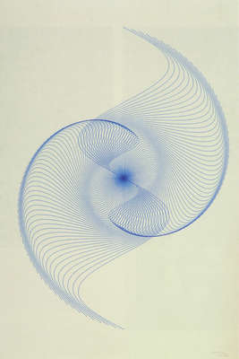

<< Color Blender Animation >> Bruno SondereggerSin-Spirale (1973) Stroke Color: Background Color: Line Count: Amplitude: Frequency: Wave Scale: min Y Strech: max X Strech: min X Strech: max Wave Width: Stroke Weight: 